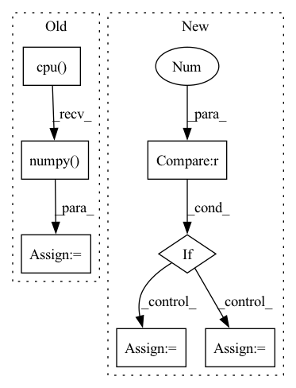

Pattern ID :17735
Before Change
total_loss += batch_loss.item() * inputs.size(0)
predicted_probs, predicted = self.get_predicted(outputs)
y_pred = list(predicted.cpu().detach().numpy() )
y_true = list(labels.cpu().detach().numpy())
self.running_metrics.update(y_true, y_pred)
After Change
predicted_probs, predicted = self.get_predicted(outputs)
// if segmentation reshape the predictions and labels
if len(predicted.shape) > 2 :
predicted = predicted.T.reshape(predicted.shape[0] * predicted.shape[2] * predicted.shape[3], predicted.shape[1])
labels = labels.T.reshape(labels.shape[0] * labels.shape[2] * labels.shape[3], labels.shape[1])
self.running_metrics.update(predicted.type(torch.uint8), labels.type(torch.uint8))
if criterion:In pattern: SUPERPATTERN
Frequency: 4
Non-data size: 7
Instances Fragment ID: 58417656
Project Name: biasvariancelabs/aitlas
Commit Name: e717447a11e0755178ba0a98c2e0561a98ae8eae
Time: 2021-03-07
Author: ivica.dimitrovski@gmail.com
File Name: aitlas/base/models.py
M Class Name: BaseModel
N Class Name: BaseModel
M Method Name: evaluate_model(4)
N Method Name: evaluate_model(4)
M Parent Class: nn.Module,Configurable
N Parent Class: nn.Module,Configurable
M File Name: aitlas/base/models.py
N File Name: aitlas/base/models.py
M Start Line: 200
M End Line: 210
N Start Line: 201
N End Line: 213
Before Change
pred = torch.ones_like(scores)
pred[scores <= .5] = 0
y_pred = pred.cpu().numpy().flatten()
auc_scores = scores.detach().cpu().numpy() .flatten()
res = {
"accuracy": accuracy_score(y_true, y_pred),After Change
"f1_score": f1_score(y_true, y_pred, zero_division=0)
}
if scores.shape[1] == 2 :
auc_scores = scores[:, 1].detach().cpu().numpy().flatten()
if len(set(y_true)) == 2:
res["auc"] = roc_auc_score(y_true, auc_scores).astype(float)
else:
res["auc"] = 0.5 //TODO: warning
return res
Fragment ID: 58417688
Project Name: makgyver/gossipy
Commit Name: 31a93a404f8bfba3869c5eb733962a438f4806f0
Time: 2021-08-29
Author: mak1788@gmail.com
File Name: gossipy/model/handler.py
M Class Name: TorchModelHandler
N Class Name: TorchModelHandler
M Method Name: evaluate(2)
N Method Name: evaluate(2)
M Parent Class: ModelHandler
N Parent Class: ModelHandler
M File Name: gossipy/model/handler.py
N File Name: gossipy/model/handler.py
M Start Line: 93
M End Line: 103
N Start Line: 99
N End Line: 123
Before Change
Converts indices to string labels, and adds a `"label"` key to the result.
predictions = output_dict["probs"].cpu().data.numpy()
argmax_indices = numpy.argmax(predictions, axis=-1)
labels = [self.vocab.get_token_from_index(x, namespace="labels") for x in argmax_indices]
output_dict["label"] = labels
return output_dictAfter Change
add `"label"` key to the dictionary with the result.
predictions = output_dict["label_probs"]
if predictions.dim() == 2 :
predictions_list = [predictions[i] for i in range(predictions.shape[0])]
else:
predictions_list = [predictions]
classes = []
for prediction in predictions_list:
label_idx = prediction.argmax(dim=-1).item() Fragment ID: 58417692
Project Name: allenai/allennlp-models
Commit Name: 4b1392424079e79a39dec47c72aefed412bec3fd
Time: 2021-04-01
Author: nelson-liu@users.noreply.github.com
File Name: allennlp_models/pair_classification/models/bimpm.py
M Class Name: BiMpm
N Class Name: BiMpm
M Method Name: make_output_human_readable(2)
N Method Name: make_output_human_readable(2)
M Parent Class: Model
N Parent Class: Model
M File Name: allennlp_models/pair_classification/models/bimpm.py
N File Name: allennlp_models/pair_classification/models/bimpm.py
M Start Line: 236
M End Line: 239
N Start Line: 242
N End Line: 254
Before Change
y, feature = net(x)
// make score and link map
score_text = y[0,:,:,0].cpu().data.numpy()
score_link = y[0,:,:,1].cpu().data.numpy()
// Post-processing
boxes, polys, mapper = getDetBoxes(score_text, score_link, text_threshold, link_threshold, low_text, poly, estimate_num_chars)After Change
return new_state_dict
def test_net(canvas_size, mag_ratio, net, image, text_threshold, link_threshold, low_text, poly, device, estimate_num_chars=False):
if isinstance(image, np.ndarray) and len(image.shape) == 4 : // image is batch of np arrays
image_arrs = image
else: // image is single numpy array
image_arrs = [image]
img_resized_list = []
// resize Fragment ID: 58417650
Project Name: jaidedai/easyocr
Commit Name: 78be56f87d091dfcea6d2289948fc86cc7188cf7
Time: 2021-06-12
Author: samhunsadamant@gmail.com
File Name: easyocr/detection.py
M Class Name: AnonimousClass
N Class Name: AnonimousClass
M Method Name: test_net(10)
N Method Name: test_net(10)
M Parent Class:
N Parent Class:
M File Name: easyocr/detection.py
N File Name: easyocr/detection.py
M Start Line: 26
M End Line: 58
N Start Line: 25
N End Line: 71